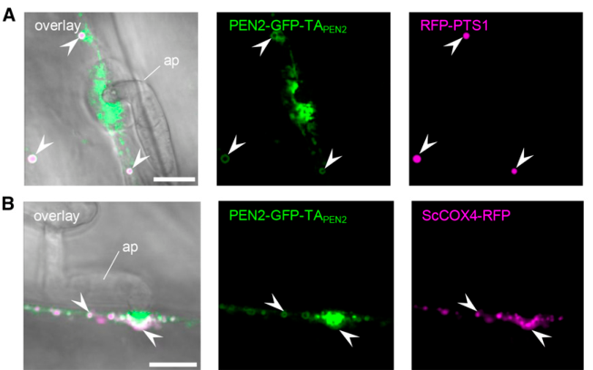

BGLU26, also called PENETRATION 2 (PEN2), is an atypical myrosinase of glycoside hydrolase family 1 in Arabidopsis thaliana. It hydrolyses the thioglucosidic bond of tryptophan-derived indole glucosinolates, notably indol-3-ylmethyl glucosinolate and its pathogen-induced, CYP81F2-dependent derivative 4-methoxyindol-3-ylmethyl glucosinolate, releasing glucose and an unstable aglycone that is further processed (with GSTU13 and PCS1) into indole metabolites exported by the ABC transporter PEN3. The enzyme also hydrolyses artificial O-glucosides in vitro, but this activity is separable from its biological role. PEN2 is a C-terminally tail-anchored protein dually targeted to the outer membranes of peroxisomes and mitochondria, with its catalytic domain facing the cytosol; during attempted fungal penetration, PEN2-bearing mitochondria become immobilised beneath the entry site, and the mitochondrial pool alone is sufficient for function. PEN2-dependent indole glucosinolate metabolism mediates pre-invasion, broad-spectrum resistance to nonadapted filamentous pathogens such as powdery mildews and Colletotrichum, and is also required for flg22-triggered callose deposition and contributes to defense against bacteria.
| GO Term | Evidence | Action | Reason |
|---|---|---|---|
|
GO:0004553
hydrolase activity, hydrolyzing O-glycosyl compounds
|
IEA
GO_REF:0000002 |
KEEP AS NON CORE |
Summary: InterPro GH1 (IPR001360) mapping to the generic O-glycosyl hydrolase term. PEN2 is a GH1 enzyme and does hydrolyse the O-glucoside 4-methylumbelliferyl-beta-D-glucoside in vitro, so the term is technically correct, but it is a parent of the experimentally supported beta-glucosidase activity and does not capture the physiologically relevant S-glycosyl (thioglucoside) hydrolysis.
Reason: Correct but uninformative family-level inference. The biologically relevant activity is thioglucosidase (myrosinase) activity on indole glucosinolates; the O-glucosidase activity is separable from immune function (E183D variant retains 4MUG hydrolysis, loses I3G hydrolysis and fails to complement pen2).
Supporting Evidence:
file:ARATH/BGLU26/BGLU26-deep-research-falcon.md
Replacing catalytic Glu183 with Asp eliminated detectable I3G hydrolysis while retaining 4MUG hydrolysis
file:ARATH/BGLU26/BGLU26-deep-research-falcon.md
generic β-glucosidase activity alone does not explain PEN2
|
|
GO:0005739
mitochondrion
|
ISM
GO_REF:0000122 |
MODIFY |
Summary: AtSubP sequence-based prediction of mitochondrial localization. Experimentally confirmed: PEN2 is a tail-anchored protein dually targeted to peroxisomes and the mitochondrial outer membrane, and the mitochondrial pool alone is sufficient for entry control.
Reason: The prediction is borne out by Fuchs et al. 2016, which places PEN2 specifically on the outer membrane of mitochondria with its catalytic domain facing the cytosol. The more precise term mitochondrial outer membrane should be used.
Proposed replacements:
mitochondrial outer membrane
Supporting Evidence:
PMID:26721862
PEN2 is a tail-anchored protein with dual-membrane targeting to peroxisomes and mitochondria
PMID:26721862
Exclusive targeting of PEN2 to the outer membrane of mitochondria complements the pen2 mutant phenotype
file:ARATH/BGLU26/BGLU26-deep-research-falcon.md
C-terminally tail-anchored protein dually targeted to peroxisomal and mitochondrial outer membranes, with its large catalytic domain facing the cytosol
|
|
GO:0005777
peroxisome
|
IDA
PMID:16293760 Pre- and postinvasion defenses both contribute to nonhost re... |
ACCEPT |
Summary: Lipka et al. 2005 showed PEN2-GFP localizing to peroxisomes. Later work confirmed peroxisomal association (as a membrane tail-anchored protein) in addition to mitochondria.
Reason: Direct experimental localization, confirmed by Fuchs et al. 2016. Peroxisome is a valid location, although the mitochondrial pool appears to be the functionally sufficient one for pathogen entry control and the protein is anchored in the peroxisomal membrane facing the cytosol rather than in the matrix.
Supporting Evidence:
PMID:16293760
The PEN2 glycosyl hydrolase localizes to peroxisomes and acts as a component of an inducible preinvasion resistance mechanism
PMID:26721862
PEN2 is a tail-anchored protein with dual-membrane targeting to peroxisomes and mitochondria
|
|
GO:0005777
peroxisome
|
IEA
GO_REF:0000044 |
ACCEPT |
Summary: UniProt subcellular location (Peroxisome) mapped to GO; derived from the same Lipka et al. 2005 experimental observation.
Reason: Consistent with the IDA annotation and with Fuchs et al. 2016 dual peroxisome/mitochondria targeting.
Supporting Evidence:
PMID:16293760
The PEN2 glycosyl hydrolase localizes to peroxisomes and acts as a component of an inducible preinvasion resistance mechanism
PMID:26721862
PEN2 is a tail-anchored protein with dual-membrane targeting to peroxisomes and mitochondria
|
|
GO:0005975
carbohydrate metabolic process
|
IEA
GO_REF:0000002 |
MARK AS OVER ANNOTATED |
Summary: InterPro GH1 mapping to carbohydrate metabolic process. PEN2 hydrolyses indole glucosinolates (thioglucosides), releasing glucose and an unstable aglycone; its biological role is glucosinolate catabolism for defense, not carbohydrate metabolism.
Reason: Generic family-level process term. The relevant process for PEN2 is indole glucosinolate catabolic process (GO:0042344), which is supported experimentally; carbohydrate metabolism is not a meaningful description of its role.
Supporting Evidence:
PMID:19095900
activated by the atypical PEN2 myrosinase (a type of beta-thioglucoside glucohydrolase) for antifungal defense
PMID:19095898
supporting the hypothesis that PEN2 acts as a myrosinase catalyzing the hydrolysis of 4-methoxy-I3G
|
|
GO:0008422
beta-glucosidase activity
|
EXP
PMID:19095900 A glucosinolate metabolism pathway in living plant cells med... |
KEEP AS NON CORE |
Summary: Bednarek et al. 2009 measured hydrolysis of 4-methylumbelliferyl-beta-D-glucoside by recombinant PEN2 (UniProt: Km 150 uM, Vmax 0.76 umol/min/mg, roughly tenfold lower Vmax than for I3G).
Reason: The in vitro O-glucosidase activity is genuine and was assayed by the curators, so it should be retained, but it is not the physiological activity: the E183D variant keeps 4MUG hydrolysis, loses glucosinolate hydrolysis and does not restore entry resistance. The core activity is thioglucosidase (myrosinase) activity.
Supporting Evidence:
file:ARATH/BGLU26/BGLU26-deep-research-falcon.md
Replacing catalytic Glu183 with Asp eliminated detectable I3G hydrolysis while retaining 4MUG hydrolysis
file:ARATH/BGLU26/BGLU26-deep-research-falcon.md
generic β-glucosidase activity alone does not explain PEN2
PMID:19095900
activated by the atypical PEN2 myrosinase (a type of beta-thioglucoside glucohydrolase) for antifungal defense
|
|
GO:0008422
beta-glucosidase activity
|
IBA
GO_REF:0000033 |
KEEP AS NON CORE |
Summary: PAINT inference of beta-glucosidase activity across the GH1 family node PTN000039458, which includes many characterized plant and animal beta-glucosidases.
Reason: PEN2 sits inside the GH1 clade and retains O-glucosidase activity in vitro, so the node placement is sound. Within this clade, however, PEN2 has acquired atypical myrosinase activity that is the biologically relevant function; beta-glucosidase activity is retained but non-core.
Supporting Evidence:
file:ARATH/BGLU26/BGLU26-deep-research-falcon.md
Replacing catalytic Glu183 with Asp eliminated detectable I3G hydrolysis while retaining 4MUG hydrolysis
PMID:19095900
activated by the atypical PEN2 myrosinase (a type of beta-thioglucoside glucohydrolase) for antifungal defense
|
|
GO:0008422
beta-glucosidase activity
|
IEA
GO_REF:0000003 |
KEEP AS NON CORE |
Summary: EC 3.2.1.21 to GO mapping. UniProt assigns EC 3.2.1.21 (beta-glucosidase) to PEN2 based on the 4MUG assay, rather than EC 3.2.1.147 (thioglucosidase / myrosinase).
Reason: Consistent with the in vitro O-glucosidase activity, but the EC assignment underlying this mapping under-describes the enzyme; myrosinase activity on indole glucosinolates is the physiological reaction.
Supporting Evidence:
file:ARATH/BGLU26/BGLU26-deep-research-falcon.md
Replacing catalytic Glu183 with Asp eliminated detectable I3G hydrolysis while retaining 4MUG hydrolysis
PMID:19095900
activated by the atypical PEN2 myrosinase (a type of beta-thioglucoside glucohydrolase) for antifungal defense
|
|
GO:0009617
response to bacterium
|
IMP
PMID:23073694 Metabolic and transcriptomic changes induced in Arabidopsis ... |
KEEP AS NON CORE |
Summary: van de Mortel et al. 2012 found that pen2, among other indole glucosinolate and camalexin pathway mutants, failed to show Pseudomonas fluorescens SS101-induced resistance against P. syringae.
Reason: Mutant phenotype showing PEN2-dependent glucosinolate metabolism is required for a rhizobacterium-induced response; this is a downstream/necessity role, not a core function of the enzyme.
Supporting Evidence:
PMID:23073694
camalexin and glucosinolates are indeed required for the induction of Pst resistance by Pf .SS101
|
|
GO:0009682
induced systemic resistance
|
IMP
PMID:23073694 Metabolic and transcriptomic changes induced in Arabidopsis ... |
KEEP AS NON CORE |
Summary: Same experiment as above: pen2 mutants were impaired in Pf.SS101-induced systemic resistance to P. syringae.
Reason: Experimental, curator-made annotation from a mutant bioassay; PEN2 contributes indole glucosinolate hydrolysis products required for the induced resistance. Pleiotropic downstream role, non-core.
Supporting Evidence:
PMID:23073694
camalexin and glucosinolates are indeed required for the induction of Pst resistance by Pf .SS101
|
|
GO:0009941
chloroplast envelope
|
HDA
PMID:12938931 Proteomic study of the Arabidopsis thaliana chloroplastic en... |
MARK AS OVER ANNOTATED |
Summary: Detection of PEN2 in a mass-spectrometry survey of "mixed" chloroplast envelope membranes.
Reason: Targeted live-cell imaging, fractionation and retargeting studies place PEN2 on peroxisomal and mitochondrial outer membranes, not plastids. Detection in a high-throughput envelope preparation most likely reflects co-purifying organellar membranes; this location should not be used to describe PEN2.
Supporting Evidence:
PMID:12938931
"mixed" envelopes were subsequently isolated using sucrose step gradients
PMID:26721862
PEN2 is a tail-anchored protein with dual-membrane targeting to peroxisomes and mitochondria
|
|
GO:0016020
membrane
|
IDA
PMID:16293760 Pre- and postinvasion defenses both contribute to nonhost re... |
ACCEPT |
Summary: Lipka et al. 2005 localization data; PEN2 is a C-terminally tail-anchored membrane protein.
Reason: Correct, if general. More specific membrane locations are mitochondrial outer membrane and peroxisomal membrane (Fuchs et al. 2016).
Supporting Evidence:
PMID:16293760
The PEN2 glycosyl hydrolase localizes to peroxisomes and acts as a component of an inducible preinvasion resistance mechanism
PMID:26721862
PEN2 is a tail-anchored protein with dual-membrane targeting to peroxisomes and mitochondria
|
|
GO:0019137
thioglucosidase activity
|
IDA
PMID:19095900 A glucosinolate metabolism pathway in living plant cells med... |
ACCEPT |
Summary: Bednarek et al. 2009 showed recombinant PEN2 hydrolyses the indole glucosinolates I3G and 4-methoxy-I3G (atypical myrosinase, a beta-thioglucoside glucohydrolase).
Reason: This is the core molecular function of PEN2, supported by direct enzyme assays, the catalytic-residue mutant, and in vivo accumulation of 4-methoxy-I3G in pen2 mutants.
Supporting Evidence:
PMID:19095900
activated by the atypical PEN2 myrosinase (a type of beta-thioglucoside glucohydrolase) for antifungal defense
PMID:19095898
supporting the hypothesis that PEN2 acts as a myrosinase catalyzing the hydrolysis of 4-methoxy-I3G
PMID:19095898
the IGS profile of the pen2-1 mutant shows increased accumulation of 4-methoxy-I3G upon Flg22 treatment
|
|
GO:0019760
glucosinolate metabolic process
|
IMP
PMID:19095900 A glucosinolate metabolism pathway in living plant cells med... |
MODIFY |
Summary: pen2 mutants accumulate the indole glucosinolate 4-methoxy-I3G and fail to produce downstream hydrolysis products after pathogen challenge.
Reason: Correct but general. The evidence specifically shows catabolism (hydrolysis) of indole glucosinolates; indole glucosinolate catabolic process (GO:0042344) is the precise term.
Proposed replacements:
indole glucosinolate catabolic process
Supporting Evidence:
PMID:19095900
activated by the atypical PEN2 myrosinase (a type of beta-thioglucoside glucohydrolase) for antifungal defense
PMID:19095898
the IGS profile of the pen2-1 mutant shows increased accumulation of 4-methoxy-I3G upon Flg22 treatment
|
|
GO:0019762
glucosinolate catabolic process
|
IBA
GO_REF:0000033 |
ACCEPT |
Summary: PAINT inference of glucosinolate catabolic process at node PTN002570733, with PEN2 itself and TGG1 among the experimental donors.
Reason: PEN2 catalyses glucosinolate hydrolysis directly; the IBA is supported by PEN2 own experimental data and is consistent with the more specific indole glucosinolate catabolic process.
Supporting Evidence:
PMID:19095900
activated by the atypical PEN2 myrosinase (a type of beta-thioglucoside glucohydrolase) for antifungal defense
|
|
GO:0042344
indole glucosinolate catabolic process
|
IMP
PMID:19095898 Glucosinolate metabolites required for an Arabidopsis innate... |
ACCEPT |
Summary: Clay et al. 2009 showed pen2 mutants accumulate 4-methoxy-I3G after flg22 treatment, consistent with PEN2 catalysing its hydrolysis.
Reason: Core process: PEN2 performs the hydrolytic step of indole glucosinolate breakdown, as shown biochemically (Bednarek et al. 2009) and genetically.
Supporting Evidence:
PMID:19095898
supporting the hypothesis that PEN2 acts as a myrosinase catalyzing the hydrolysis of 4-methoxy-I3G
PMID:19095898
the IGS profile of the pen2-1 mutant shows increased accumulation of 4-methoxy-I3G upon Flg22 treatment
PMID:19095900
activated by the atypical PEN2 myrosinase (a type of beta-thioglucoside glucohydrolase) for antifungal defense
|
|
GO:0042742
defense response to bacterium
|
IMP
PMID:19095898 Glucosinolate metabolites required for an Arabidopsis innate... |
KEEP AS NON CORE |
Summary: pen2-1 seedlings were slightly but significantly more susceptible to P. syringae pv. tomato DC3000 in a flg22-dependent growth suppression assay.
Reason: Modest phenotype; PEN2 indole glucosinolate hydrolysis contributes to MAMP-triggered defense against bacteria, but its principal role is pre-invasion antifungal defense.
Supporting Evidence:
PMID:19095898
the IGS hydrolytic mutant pen2-1 are slightly but significantly more susceptible to wild-type PtoDC3000
|
|
GO:0050832
defense response to fungus
|
IMP
PMID:16293760 Pre- and postinvasion defenses both contribute to nonhost re... |
ACCEPT |
Summary: Lipka et al. 2005 identified PEN2 as required for pre-invasion nonhost resistance to the powdery mildews Blumeria graminis f. sp. hordei and Erysiphe pisi; later shown for Colletotrichum gloeosporioides and other filamentous pathogens.
Reason: PEN2 participates directly: it catalyses the hydrolysis of 4-methoxy-I3G that generates the antifungal products at attempted entry sites, and mitochondria carrying PEN2 accumulate beneath the fungal penetration site. This is participation by catalysis, not mere necessity, so the defense term is justified alongside the mechanistic indole glucosinolate catabolic process.
Supporting Evidence:
PMID:16293760
Arabidopsis PEN2 restricts pathogen entry of two ascomycete powdery mildew fungi
PMID:19095900
activated by the atypical PEN2 myrosinase (a type of beta-thioglucoside glucohydrolase) for antifungal defense
PMID:20605856
thereby demonstrating the involvement of PEN2 in nonhost resistance to this pathogen
|
|
GO:0052544
defense response by callose deposition in cell wall
|
IMP
PMID:19095898 Glucosinolate metabolites required for an Arabidopsis innate... |
KEEP AS NON CORE |
Summary: Clay et al. 2009 found pen2 mutants lost flg22-induced callose deposition.
Reason: PEN2 acts upstream: a hydrolysis product of 4-methoxy-I3G is proposed to act as a signal or co-activator for callose synthesis by PMR4/GSL5. PEN2 itself does not transport or deposit callose. Callose deposition and fungal entry resistance are distinct readouts.
Supporting Evidence:
PMID:19095898
Both pen2-1 and pen2-2 mutants exhibited a loss of the callose response to Flg22
|
|
GO:0071472
cellular response to salt stress
|
IBA
GO_REF:0000033 |
REMOVE |
Summary: PAINT inference from AT1G66270 and AT1G66280 (BGLU21 and BGLU22, ER-body beta-glucosidases) at node PTN002570733.
Reason: The salt-stress donors are ER-body resident root/seedling glucosidases whose function is tied to ER bodies; PEN2 is a cytosol-facing, peroxisome/mitochondria tail-anchored myrosinase with no evidence of a role in salt stress. The process appears lineage-specific to the ER-body subclade and is over-propagated to PEN2.
Propagation Review
Root cause:
PROPAGATION BAD
Failure modes:
FUNCTIONAL DIVERGENCE
COMPARTMENT OR COMPLEX MISMATCH
Sources checked:
PANTHER:PTN002570733
· PTN002570733
SUPPORTS SOURCE BUT NOT TARGET
Salt-stress evidence at this node comes from the ER-body glucosidases AT1G66270/AT1G66280; PEN2 is a peroxisome/mitochondria tail-anchored myrosinase with no salt-stress evidence.
Supporting Evidence:
file:ARATH/BGLU26/BGLU26-deep-research-falcon.md
C-terminally tail-anchored protein dually targeted to peroxisomal and mitochondrial outer membranes, with its large catalytic domain facing the cytosol
|
|
GO:0098542
defense response to other organism
|
IBA
GO_REF:0000033 |
ACCEPT |
Summary: PAINT inference of defense response to other organism, with PEN2 itself as the experimental donor.
Reason: General but correct; PEN2 has direct experimental support for defense against fungi and bacteria, and its own data seed this IBA.
Supporting Evidence:
PMID:16293760
Arabidopsis PEN2 restricts pathogen entry of two ascomycete powdery mildew fungi
|
|
GO:0005778
peroxisomal membrane
|
IDA
PMID:26721862 Immobilized Subpopulations of Leaf Epidermal Mitochondria Me... |
NEW |
Summary: Fuchs et al. 2016 showed PEN2 is tail-anchored with dual targeting to peroxisomal and mitochondrial membranes.
Reason: More precise than the existing peroxisome annotations: PEN2 is anchored in the peroxisomal membrane via its C-terminal tail with the catalytic domain facing the cytosol.
Supporting Evidence:
PMID:26721862
PEN2 is a tail-anchored protein with dual-membrane targeting to peroxisomes and mitochondria
file:ARATH/BGLU26/BGLU26-deep-research-falcon.md
C-terminally tail-anchored protein dually targeted to peroxisomal and mitochondrial outer membranes, with its large catalytic domain facing the cytosol
|
Q: Should UniProt/EC assignments for PEN2 be revised from EC 3.2.1.21 (beta-glucosidase) to EC 3.2.1.147 (thioglucosidase), given that the O-glucosidase activity is separable from the immune function?
Q: What is the decisive bioactive product of PEN2-initiated 4-methoxy-I3G hydrolysis at fungal entry sites, and is it directly antifungal or a signal?
Q: Does the peroxisomal PEN2 pool have any function distinct from the mitochondrial pool that is sufficient for entry control?
Experiment: Compare kinetic parameters of purified PEN2 on 4-methoxy-I3G, 4-hydroxy-I3G and I3G at cytosolic pH, alongside the E183D variant, to define the native substrate preference.
Experiment: Peroxisome-only retargeted PEN2 (e.g. PEX-specific tail anchor) in pen2 to test whether the peroxisomal pool alone can complement entry resistance.
The research report should be a detailed narrative explaining the function, biological processes, and localization of the gene product. Citations should be given for all claims.
You should prioritize authoritative reviews and primary scientific literature when conducting research. You can supplement
this with annotations you find in gene/protein databases, but these can be outdated or inaccurate.
We are specifically interested in the primary function of the gene - for enzymes, what reaction is catalyzed, and what is the substrate specificity? For transporters, what is the substrate? For structural proteins or adapters, what is the broader structural role? For signaling molecules, what is the role in the pathway.
We are interested in where in or outside the cell the gene product carries out its function.
We are also interested in the signaling or biochemical pathways in which the gene functions. We are less interested in broad pleiotropic effects, except where these elucidate the precise role.
Include evidence where possible. We are interested in both experimental evidence as well as inference from structure, evolution, or bioinformatic analysis. Precise studies should be prioritized over high-throughput, where available.
Identity verified. The subject is Arabidopsis thaliana β-glucosidase 26, BGLU26, also called PENETRATION 2 (PEN2), encoded by At2g44490; the supplied UniProt accession is O64883. Published Arabidopsis annotations independently connect BGLU26, PEN2, and At2g44490 and place the protein among family-1 glycoside hydrolases (GH1). This report does not concern other proteins called PEN2 or the related Arabidopsis enzyme BGLU27. (sugiyama2019atypicalmyrosinaseas pages 3-4, fuchs2016immobilizedsubpopulationsof pages 1-2)
Best-supported annotation: PEN2 is an atypical myrosinase—a β-thioglucosidase (EC 3.2.1.21)—that activates tryptophan-derived indole glucosinolates during localized, pre-invasive plant immunity. It hydrolyzes the glucosinolate’s thioglucosidic bond, yielding glucose and an unstable aglycone that undergoes further reactions. PEN2 therefore catalyzes the initiating hydrolysis, not the complete conversion to any one detected defensive metabolite. Unlike many classical myrosinases, it retains a glutamate at a catalytic position commonly occupied by glutamine. (sugiyama2019atypicalmyrosinaseas pages 3-4, bednarek2009aglucosinolatemetabolism pages 4-5, singh2026lossofa pages 1-4)
Purified recombinant PEN2 directly hydrolyzed indol-3-ylmethyl glucosinolate (I3G; glucobrassicin) and 4-methoxyindol-3-ylmethyl glucosinolate (4MI3G). In the foundational biochemical study, its activity optimum was approximately pH 6. It also hydrolyzed the artificial O-glucoside 4-methylumbelliferyl-β-D-glucoside (4MUG), but its maximum reaction rate on 4MUG was approximately tenfold lower than on the assayed glucosinolates, with an approximately fivefold lower Michaelis constant. Replacing catalytic Glu183 with Asp eliminated detectable I3G hydrolysis while retaining 4MUG hydrolysis; the stable variant also failed to restore the pen2 pathogen-entry phenotype. Thus, generic β-glucosidase activity alone does not explain PEN2’s immune function. Bednarek et al., January 2009, Science. (bednarek2009aglucosinolatemetabolism pages 4-5)
Biochemical substrate range is not the same as the crucial in-plant substrate. Following fungal challenge, pen2 leaves accumulate unusually high amounts of 4MI3G. Mutations in CYP81F2, which supplies 4-substituted indole glucosinolates, lower 4MI3G and impair penetration resistance; combining cyp81f2 and pen2 does not further worsen the tested entry phenotype. Although PEN2 can also hydrolyze unsubstituted I3G, these results implicate the CYP81F2-dependent, 4-substituted substrate branch—especially 4MI3G—in effective antifungal defense. Hydrolysis of 4-hydroxy-I3G or subsequent processing may also contribute, but the relative native turnover rates of these individual compounds and the identity of the decisive bioactive product have not been established by these genetic comparisons. Bednarek et al., 2009; Sugiyama and Hirai, August 2019, Frontiers in Plant Science. (bednarek2009aglucosinolatemetabolism pages 3-4, bednarek2009aglucosinolatemetabolism pages 4-5, bednarek2009aglucosinolatemetabolism pages 5-6, sugiyama2019atypicalmyrosinaseas pages 4-6)
The detected indol-3-ylmethylamine (I3A), raphanusamic acid (RA), and 4-O-β-D-glucosyl-indol-3-yl formamide (4OGlcI3F) are best described as PEN2-pathway-associated, downstream metabolites, not direct products demonstrated for purified PEN2. Notably, I3A and RA can also accumulate when another myrosinase, TGG4, is overexpressed; their persistence in cyp81f2 mutants argues against assigning either compound alone as the agent of CYP81F2-dependent penetration resistance. Bednarek et al., 2009; Lu et al., May 2015, Plant Physiology. (bednarek2009aglucosinolatemetabolism pages 4-5, bednarek2009aglucosinolatemetabolism pages 5-6, lu2015mutantallelespecificuncoupling pages 17-22)
The table separates experimentally established hydrolysis and localization from downstream pathway assignments and unresolved product identities.
| Evidence area | Key findings for A. thaliana BGLU26/PEN2 (At2g44490) | Evidence grade and limitations | Sources |
|---|---|---|---|
| Catalytic reaction and direct substrates | PEN2 is an atypical GH1 myrosinase that hydrolyzes the beta-thioglucosidic bond of indole glucosinolates, releasing glucose and an unstable aglycone. Purified recombinant PEN2 directly hydrolyzed I3G and 4-methoxy-I3G (4MI3G), with an optimum near pH 6. Its maximum rate on the model O-glucoside 4-MUG was approximately 10-fold lower, while the Michaelis constant was approximately 5-fold lower. The catalytic-site E183D variant lost I3G hydrolysis but retained 4-MUG activity, linking Glu183 specifically to myrosinase function. | High: direct purified-enzyme and catalytic-mutant evidence. The unstable aglycone—not I3A, raphanusamic acid (RA), or 4OGlcI3F—is the immediate hydrolysis product; those detected metabolites arise through subsequent chemistry. | Bednarek et al., 2009, Science, doi:10.1126/science.1163732 (bednarek2009aglucosinolatemetabolism pages 4-5, sugiyama2019atypicalmyrosinaseas pages 3-4) |
| Physiologically important substrate | Pathogen-challenged pen2 leaves hyperaccumulated 4MI3G, whereas cyp81f2 mutants had reduced 4MI3G and phenocopied the penetration-resistance defect; the cyp81f2 pen2 double mutant was no more impaired than either single mutant. Although PEN2 hydrolyzes I3G and 4MI3G in vitro, genetic evidence indicates that products derived from CYP81F2-generated 4-substituted indole glucosinolates—especially 4MI3G and possibly 4OHI3G—are crucial for antifungal entry control. | High for pathway dependence; moderate for the exact native substrate; unresolved for the final toxin. I3A and RA remain in cyp81f2 and therefore are not sufficient to explain penetration resistance. The precise bioactive metabolite remains unknown, and 4OGlcI3F is a downstream pathway product rather than the immediate PEN2 product. | Bednarek et al., 2009, doi:10.1126/science.1163732; Sugiyama and Hirai, 2019, doi:10.3389/fpls.2019.01008 (bednarek2009aglucosinolatemetabolism pages 3-4, bednarek2009aglucosinolatemetabolism pages 5-6, sugiyama2019atypicalmyrosinaseas pages 4-6) |
| Functional subcellular location | PEN2 is a C-terminally tail-anchored protein dually targeted to peroxisomal and mitochondrial outer membranes, with its large catalytic domain facing the cytosol. Only a mitochondrial subpopulation becomes immobilized beneath attempted fungal penetration sites and develops PEN2 aggregates; fluorescence intensifies over approximately 20–30 min. Replacing the native anchor with the mitochondria-specific TOM20-4 anchor excluded PEN2 from peroxisomes yet restored the pen2 entry-resistance phenotype to wild-type levels. ER-localized CYP81F2 reorganizes next to these mitochondria, spatially coupling substrate formation and hydrolysis. | High: live-cell colocalization, fractionation, organelle-specific retargeting, and genetic complementation. A solely “peroxisomal” annotation is incomplete: a mitochondrial outer-membrane pool is sufficient for the tested powdery-mildew defense function, although a role for the peroxisomal pool in other contexts is not excluded. | Fuchs et al., 2016, Plant Cell, doi:10.1105/tpc.15.00887 (fuchs2016immobilizedsubpopulationsof pages 1-2, fuchs2016immobilizedsubpopulationsof pages 2-3, fuchs2016immobilizedsubpopulationsof pages 6-10, fuchs2016immobilizedsubpopulationsof media 0a05356d) |
| Downstream processing and export | GSTU13 acts downstream of PEN2 in glutathione-dependent processing: gstu13 mutants retain normal I3G and 4MI3G but lose most pathogen-induced 4OGlcI3F and show reduced I3A and RA. PCS1 relocates to PEN2-decorated mitochondria and supports the same pathway independently of its canonical catalytic activities. PEN3 exports pathway products across the plasma membrane. Transport assays directly establish 4-methoxyindol-3-yl methanol (4MeOI3M) as a PEN3 substrate; by contrast, the proposal that a precursor of 4OGlcI3F is exported is inferred from its accumulation in pen3. Neither 4MeOI3M nor its cysteine conjugate directly inhibited P. infestans growth in vitro, whereas 4MeOI3M enhanced flg22-induced callose, suggesting signaling or defense reinforcement. | High for GSTU13 and PCS1 pathway membership and PEN3 transport of 4MeOI3M; moderate for the identities of other exported compounds. These downstream metabolites should not be annotated as direct PEN2 catalytic products. | Piślewska-Bednarek et al., 2018, doi:10.1104/pp.17.01455; Matern et al., 2019, doi:10.1074/jbc.RA119.007676; Hématy et al., 2020, doi:10.1104/pp.19.01393 (pislewskabednarek2018glutathionetransferaseu13 pages 6-9, matern2019asubstrateof pages 1-2, lu2015mutantallelespecificuncoupling pages 17-22, hematy2020moonlightingfunctionof pages 1-2) |
Table: Evidence grading for the catalytic function, physiological substrates, subcellular localization, and downstream pathway of Arabidopsis BGLU26/PEN2. The table separates direct PEN2 hydrolysis from subsequent metabolite processing and PEN3-mediated export.
The description “peroxisomal β-glucosidase” is incomplete. Functional fluorescent fusions and biochemical fractionation place PEN2 on both peroxisomal and mitochondrial membranes. Its C-terminal tail anchor positions the large catalytic portion toward the cytosol, rather than in the peroxisomal matrix or mitochondrial interior. During attempted powdery-mildew entry into leaf epidermal cells, a subset of mitochondria, but not peroxisomes, becomes immobilized beneath the fungal penetration site and develops concentrated peripheral PEN2 signal. Time-lapse imaging observed intensification over roughly 20–30 minutes. Fuchs et al., January 2016 issue, The Plant Cell. (fuchs2016immobilizedsubpopulationsof pages 1-2, fuchs2016immobilizedsubpopulationsof pages 2-3, fuchs2016immobilizedsubpopulationsof pages 5-6)
Most decisively, replacing PEN2’s native anchor with a mitochondria-specific TOM20-4 anchor yielded a protein excluded from peroxisomes that restored pathogen-entry resistance in pen2 plants. The mitochondrial outer-membrane pool is therefore sufficient for this experimentally tested defense function; the experiment does not exclude another role for peroxisome-associated PEN2 under different conditions. Cropped Figure 3 localization panels and Figure 4 targeting/complementation panels provide visual evidence for this distinction. Fuchs et al., 2016. (fuchs2016immobilizedsubpopulationsof pages 6-10, fuchs2016immobilizedsubpopulationsof media 0a05356d)
The most directly supported sequence is tryptophan-derived I3G → CYP81F2-dependent 4-hydroxylated glucosinolate → methoxylated 4MI3G → PEN2-initiated hydrolysis → further glutathione-associated processing and localized export. CYP81F2 is associated with the endoplasmic-reticulum surface, which reorganizes near PEN2-bearing, immobilized mitochondria at attempted fungal entry sites. This proximity offers a spatial explanation for producing and activating defensive metabolites within otherwise intact plant cells—a process distinct from the tissue-damage-triggered classical “mustard oil bomb.” Bednarek et al., 2009; Fuchs et al., 2016; Qin et al., July 2023, Plant Communications. (fuchs2016immobilizedsubpopulationsof pages 1-2, fuchs2016immobilizedsubpopulationsof pages 2-3, bednarek2009aglucosinolatemetabolism pages 5-6, qin2023developingmultifunctionalcrops pages 4-5)
Downstream partners have different jobs. GSTU13 participates in glutathione-dependent processing after PEN2: gstu13 plants retain approximately wild-type I3G and 4MI3G levels but are strongly impaired in pathogen-induced 4OGlcI3F accumulation and partially impaired in I3A/RA accumulation. The cytosolic protein PCS1 moves to PEN2-bearing mitochondrial surfaces after pathogen challenge and is needed for normal pathway-associated metabolite production, apparently independently of its canonical phytochelatin-synthesis activity. PEN3/PDR8, in contrast, is a plasma-membrane ABC transporter implicated in export at pathogen contact sites; it must not be confused with the enzyme PEN2. Piślewska-Bednarek et al., 2018, Plant Physiology; Hématy et al., 2020, Plant Physiology; Stein et al., 2006, The Plant Cell. (pislewskabednarek2018glutathionetransferaseu13 pages 6-9, hematy2020moonlightingfunctionof pages 1-2, stein2006arabidopsispen3pdr8anatp pages 9-11)
A chemically specific export result comes from assays showing that 4-methoxyindol-3-yl methanol is transported by PEN3 and that its production requires PEN2 and PCS1. This compound and a related cysteine conjugate were found in pathogen-exposed leaf-surface samples. Neither inhibited Phytophthora infestans mycelial growth in the reported in-vitro assay; externally supplied methanol derivative instead enhanced flg22-triggered callose deposition, supporting a possible defense-modulating role. Separately, accumulation of 4OGlcI3F in pen3 suggests transport of a precursor, not proof that PEN3 transports 4OGlcI3F itself. The full identity of the protective PEN2-derived product or products remains unsettled and may depend on the challenge. Matern et al., April 2019, Journal of Biological Chemistry; Lu et al., 2015. (matern2019asubstrateof pages 1-2, matern2019asubstrateof pages 8-9, lu2015mutantallelespecificuncoupling pages 1-5)
Functionally, PEN2 restricts pre-invasive penetration by nonadapted powdery mildews, including Blumeria graminis f. sp. hordei and Erysiphe pisi; the pathway also contributes to defense against other filamentous pathogens. Its importance is not uniform across pathogen entry strategies: Arabidopsis indole-glucosinolate-dependent resistance to Colletotrichum is particularly associated with hyphal-tip-based entry. PEN2-dependent metabolism is also implicated in microbe-associated-molecular-pattern-triggered callose responses, but callose accumulation and resistance to fungal entry should not be treated as interchangeable measures. Bednarek et al., 2009; Hiruma et al., July 2010, The Plant Cell; Sugiyama and Hirai, 2019. (bednarek2009aglucosinolatemetabolism pages 3-4, hiruma2010entrymode–dependentfunction pages 1-2, sugiyama2019atypicalmyrosinaseas pages 4-6)
2023–2024 context. The 2023 crop-glucosinolate review describes the biosynthetic route supplying 4-substituted indole glucosinolates and its relevance to Brassicaceae improvement, but does not establish an agricultural deployment of BGLU26 itself. Qin et al., July 2023. A 2024 primary study of root-microbiota assembly examined PYK10/BGLU21 in ER bodies, not PEN2; its root-microbiota phenotypes should not be transferred to BGLU26 merely because the enzymes can act on related glucosinolates. Basak et al., 2024, New Phytologist; accepted September 2023. The demonstrated real-world implementation of PEN2 remains an Arabidopsis experimental system—loss-of-function analysis, metabolite profiling, pathogen-challenge imaging, and targeted complementation—rather than a validated PEN2-based commercial crop-resistance intervention. (qin2023developingmultifunctionalcrops pages 4-5, basak2024erbodyresidentmyrosinases pages 1-2, basak2024erbodyresidentmyrosinases pages 2-3, fuchs2016immobilizedsubpopulationsof pages 6-10)
Subsequent provisional development. An August 2026 bioRxiv preprint, not peer reviewed, reports that mitochondria-targeted Arabidopsis BGLU27 and Brassica rapa BABG.a can partially replace PEN2 in mutant plants, whereas several other tested BGLUs cannot. Restoring a normally absent conserved disulfide bond abolished engineered PEN2 activity. This supports a testable structural/evolutionary explanation for PEN2-like immune myrosinases but is not evidence of crop deployment or a replacement for the earlier direct biochemical demonstration. Singh et al., August 2026, bioRxiv. (singh2026lossofa pages 1-4, singh2026lossofa pages 22-25)
Conclusion. Annotate O64883/At2g44490 primarily as a cytosol-facing, mitochondrial- and peroxisomal-membrane-associated GH1 indole-glucosinolate myrosinase. Its experimentally demonstrated reaction is cleavage of I3G and 4MI3G, while its best-supported immune role is localized activation of the CYP81F2-dependent 4-substituted indole-glucosinolate pathway at attempted pathogen-entry sites. Keep immediate enzyme products, downstream metabolites, and proposed antimicrobial or signaling activities explicitly distinct. (bednarek2009aglucosinolatemetabolism pages 4-5, bednarek2009aglucosinolatemetabolism pages 5-6, fuchs2016immobilizedsubpopulationsof pages 1-2, matern2019asubstrateof pages 1-2)
References
(sugiyama2019atypicalmyrosinaseas pages 3-4): Ryosuke Sugiyama and Masami Y. Hirai. Atypical myrosinase as a mediator of glucosinolate functions in plants. Frontiers in Plant Science, Aug 2019. URL: https://doi.org/10.3389/fpls.2019.01008, doi:10.3389/fpls.2019.01008. This article has 72 citations.
(fuchs2016immobilizedsubpopulationsof pages 1-2): Rene Fuchs, Michaela Kopischke, Christine Klapprodt, Gerd Hause, Andreas J. Meyer, Markus Schwarzländer, Mark D. Fricker, and Volker Lipka. Immobilized subpopulations of leaf epidermal mitochondria mediate penetration2-dependent pathogen entry control in arabidopsis. Plant Cell, 28:130-145, Dec 2016. URL: https://doi.org/10.1105/tpc.15.00887, doi:10.1105/tpc.15.00887. This article has 134 citations and is from a highest quality peer-reviewed journal.
(bednarek2009aglucosinolatemetabolism pages 4-5): Paweł Bednarek, Mariola Piślewska-Bednarek, Aleš Svatoš, Bernd Schneider, Jan Doubský, Madina Mansurova, Matt Humphry, Chiara Consonni, Ralph Panstruga, Andrea Sanchez-Vallet, Antonio Molina, and Paul Schulze-Lefert. A glucosinolate metabolism pathway in living plant cells mediates broad-spectrum antifungal defense. Science, 323:101-106, Jan 2009. URL: https://doi.org/10.1126/science.1163732, doi:10.1126/science.1163732. This article has 1233 citations and is from a highest quality peer-reviewed journal.
(singh2026lossofa pages 1-4): Gopal Singh, Himani Agrawal, Mariola Piślewska-Bednarek, Suthitar Singkaravanit-Ogawa, Chujia Jin, Anna Piasecka, Monidipa Bose, Sylwia Kuczewska, Aleksander Strugała, Łukasz Marczak, Milosz Ruszkowski, Yoshitaka Takano, and Paweł Bednarek. Loss of a conserved disulfide bond defines penetration2-related immune myrosinases in brassicaceae. bioRxiv, Aug 2026. URL: https://doi.org/10.64898/2026.08.10.742692, doi:10.64898/2026.08.10.742692. This article has 0 citations.
(bednarek2009aglucosinolatemetabolism pages 3-4): Paweł Bednarek, Mariola Piślewska-Bednarek, Aleš Svatoš, Bernd Schneider, Jan Doubský, Madina Mansurova, Matt Humphry, Chiara Consonni, Ralph Panstruga, Andrea Sanchez-Vallet, Antonio Molina, and Paul Schulze-Lefert. A glucosinolate metabolism pathway in living plant cells mediates broad-spectrum antifungal defense. Science, 323:101-106, Jan 2009. URL: https://doi.org/10.1126/science.1163732, doi:10.1126/science.1163732. This article has 1233 citations and is from a highest quality peer-reviewed journal.
(bednarek2009aglucosinolatemetabolism pages 5-6): Paweł Bednarek, Mariola Piślewska-Bednarek, Aleš Svatoš, Bernd Schneider, Jan Doubský, Madina Mansurova, Matt Humphry, Chiara Consonni, Ralph Panstruga, Andrea Sanchez-Vallet, Antonio Molina, and Paul Schulze-Lefert. A glucosinolate metabolism pathway in living plant cells mediates broad-spectrum antifungal defense. Science, 323:101-106, Jan 2009. URL: https://doi.org/10.1126/science.1163732, doi:10.1126/science.1163732. This article has 1233 citations and is from a highest quality peer-reviewed journal.
(sugiyama2019atypicalmyrosinaseas pages 4-6): Ryosuke Sugiyama and Masami Y. Hirai. Atypical myrosinase as a mediator of glucosinolate functions in plants. Frontiers in Plant Science, Aug 2019. URL: https://doi.org/10.3389/fpls.2019.01008, doi:10.3389/fpls.2019.01008. This article has 72 citations.
(lu2015mutantallelespecificuncoupling pages 17-22): Xunli Lu, Jan Dittgen, Mariola Piślewska-Bednarek, Antonio Molina, Bernd Schneider, Aleš Svatoš, Jan Doubský, Korbinian Schneeberger, Detlef Weigel, Paweł Bednarek, and Paul Schulze-Lefert. Mutant allele-specific uncoupling of penetration3 functions reveals engagement of the atp-binding cassette transporter in distinct tryptophan metabolic pathways1[open]. Plant Physiology, 168:814-827, May 2015. URL: https://doi.org/10.1104/pp.15.00182, doi:10.1104/pp.15.00182. This article has 89 citations and is from a highest quality peer-reviewed journal.
(fuchs2016immobilizedsubpopulationsof pages 2-3): Rene Fuchs, Michaela Kopischke, Christine Klapprodt, Gerd Hause, Andreas J. Meyer, Markus Schwarzländer, Mark D. Fricker, and Volker Lipka. Immobilized subpopulations of leaf epidermal mitochondria mediate penetration2-dependent pathogen entry control in arabidopsis. Plant Cell, 28:130-145, Dec 2016. URL: https://doi.org/10.1105/tpc.15.00887, doi:10.1105/tpc.15.00887. This article has 134 citations and is from a highest quality peer-reviewed journal.
(fuchs2016immobilizedsubpopulationsof pages 6-10): Rene Fuchs, Michaela Kopischke, Christine Klapprodt, Gerd Hause, Andreas J. Meyer, Markus Schwarzländer, Mark D. Fricker, and Volker Lipka. Immobilized subpopulations of leaf epidermal mitochondria mediate penetration2-dependent pathogen entry control in arabidopsis. Plant Cell, 28:130-145, Dec 2016. URL: https://doi.org/10.1105/tpc.15.00887, doi:10.1105/tpc.15.00887. This article has 134 citations and is from a highest quality peer-reviewed journal.
(fuchs2016immobilizedsubpopulationsof media 0a05356d): Rene Fuchs, Michaela Kopischke, Christine Klapprodt, Gerd Hause, Andreas J. Meyer, Markus Schwarzländer, Mark D. Fricker, and Volker Lipka. Immobilized subpopulations of leaf epidermal mitochondria mediate penetration2-dependent pathogen entry control in arabidopsis. Plant Cell, 28:130-145, Dec 2016. URL: https://doi.org/10.1105/tpc.15.00887, doi:10.1105/tpc.15.00887. This article has 134 citations and is from a highest quality peer-reviewed journal.
(pislewskabednarek2018glutathionetransferaseu13 pages 6-9): Mariola Piślewska-Bednarek, Ryohei Thomas Nakano, Kei Hiruma, Marta Pastorczyk, Andrea Sanchez-Vallet, Suthitar Singkaravanit-Ogawa, Danuta Ciesiołka, Yoshitaka Takano, Antonio Molina, Paul Schulze-Lefert, and Paweł Bednarek. Glutathione transferase u13 functions in pathogen-triggered glucosinolate metabolism1. Plant Physiology, 176:538-551, Nov 2018. URL: https://doi.org/10.1104/pp.17.01455, doi:10.1104/pp.17.01455. This article has 104 citations and is from a highest quality peer-reviewed journal.
(matern2019asubstrateof pages 1-2): Andreas Matern, Christoph Böttcher, Lennart Eschen-Lippold, Bernhard Westermann, Ulrike Smolka, Stefanie Döll, Fabian Trempel, Bibek Aryal, Dierk Scheel, Markus Geisler, and Sabine Rosahl. A substrate of the abc transporter pen3 stimulates bacterial flagellin (flg22)-induced callose deposition in arabidopsis thaliana. Journal of Biological Chemistry, 294:6857-6870, Apr 2019. URL: https://doi.org/10.1074/jbc.ra119.007676, doi:10.1074/jbc.ra119.007676. This article has 57 citations and is from a domain leading peer-reviewed journal.
(hematy2020moonlightingfunctionof pages 1-2): Kian Hématy, Melisa Lim, Candice Cherk, Mariola Piślewska-Bednarek, Clara Sanchez-Rodriguez, Monica Stein, Rene Fuchs, Christine Klapprodt, Volker Lipka, Antonio Molina, Erwin Grill, Paul Schulze-Lefert, Paweł Bednarek, and Shauna Somerville. Moonlighting function of phytochelatin synthase1 in extracellular defense against fungal pathogens. Plant Physiology, 182:1920-1932, Jan 2020. URL: https://doi.org/10.1104/pp.19.01393, doi:10.1104/pp.19.01393. This article has 42 citations and is from a highest quality peer-reviewed journal.
(fuchs2016immobilizedsubpopulationsof pages 5-6): Rene Fuchs, Michaela Kopischke, Christine Klapprodt, Gerd Hause, Andreas J. Meyer, Markus Schwarzländer, Mark D. Fricker, and Volker Lipka. Immobilized subpopulations of leaf epidermal mitochondria mediate penetration2-dependent pathogen entry control in arabidopsis. Plant Cell, 28:130-145, Dec 2016. URL: https://doi.org/10.1105/tpc.15.00887, doi:10.1105/tpc.15.00887. This article has 134 citations and is from a highest quality peer-reviewed journal.
(qin2023developingmultifunctionalcrops pages 4-5): Han Qin, Graham J. King, Priyakshee Borpatragohain, and Jun Zou. Developing multifunctional crops by engineering brassicaceae glucosinolate pathways. Jul 2023. URL: https://doi.org/10.1016/j.xplc.2023.100565, doi:10.1016/j.xplc.2023.100565. This article has 58 citations and is from a peer-reviewed journal.
(stein2006arabidopsispen3pdr8anatp pages 9-11): Mónica Stein, Jan Dittgen, Clara Sánchez-Rodríguez, Bi-Huei Hou, Antonio Molina, Paul Schulze-Lefert, Volker Lipka, and Shauna Somerville. arabidopsispen3/pdr8, an atp binding cassette transporter, contributes to nonhost resistance to inappropriate pathogens that enter by direct penetration. The Plant Cell, 18:731-746, Feb 2006. URL: https://doi.org/10.1105/tpc.105.038372, doi:10.1105/tpc.105.038372. This article has 826 citations.
(matern2019asubstrateof pages 8-9): Andreas Matern, Christoph Böttcher, Lennart Eschen-Lippold, Bernhard Westermann, Ulrike Smolka, Stefanie Döll, Fabian Trempel, Bibek Aryal, Dierk Scheel, Markus Geisler, and Sabine Rosahl. A substrate of the abc transporter pen3 stimulates bacterial flagellin (flg22)-induced callose deposition in arabidopsis thaliana. Journal of Biological Chemistry, 294:6857-6870, Apr 2019. URL: https://doi.org/10.1074/jbc.ra119.007676, doi:10.1074/jbc.ra119.007676. This article has 57 citations and is from a domain leading peer-reviewed journal.
(lu2015mutantallelespecificuncoupling pages 1-5): Xunli Lu, Jan Dittgen, Mariola Piślewska-Bednarek, Antonio Molina, Bernd Schneider, Aleš Svatoš, Jan Doubský, Korbinian Schneeberger, Detlef Weigel, Paweł Bednarek, and Paul Schulze-Lefert. Mutant allele-specific uncoupling of penetration3 functions reveals engagement of the atp-binding cassette transporter in distinct tryptophan metabolic pathways1[open]. Plant Physiology, 168:814-827, May 2015. URL: https://doi.org/10.1104/pp.15.00182, doi:10.1104/pp.15.00182. This article has 89 citations and is from a highest quality peer-reviewed journal.
(hiruma2010entrymode–dependentfunction pages 1-2): Kei Hiruma, Mariko Onozawa-Komori, Fumika Takahashi, Makoto Asakura, Paweł Bednarek, Tetsuro Okuno, Paul Schulze-Lefert, and Yoshitaka Takano. Entry mode–dependent function of an indole glucosinolate pathway in arabidopsis for nonhost resistance against anthracnose pathogens[w]. Plant Cell, 22:2429-2443, Jul 2010. URL: https://doi.org/10.1105/tpc.110.074344, doi:10.1105/tpc.110.074344. This article has 150 citations and is from a highest quality peer-reviewed journal.
(basak2024erbodyresidentmyrosinases pages 1-2): Arpan Kumar Basak, Anna Piasecka, Jana Hucklenbroich, Gözde Merve Türksoy, Rui Guan, Pengfan Zhang, Felix Getzke, Ruben Garrido‐Oter, Stephane Hacquard, Kazimierz Strzałka, Paweł Bednarek, Kenji Yamada, and Ryohei Thomas Nakano. Er body-resident myrosinases and tryptophan specialized metabolism modulate root microbiota assembly. The New phytologist, 241:329-342, Sep 2024. URL: https://doi.org/10.1111/nph.19289, doi:10.1111/nph.19289. This article has 28 citations.
(basak2024erbodyresidentmyrosinases pages 2-3): Arpan Kumar Basak, Anna Piasecka, Jana Hucklenbroich, Gözde Merve Türksoy, Rui Guan, Pengfan Zhang, Felix Getzke, Ruben Garrido‐Oter, Stephane Hacquard, Kazimierz Strzałka, Paweł Bednarek, Kenji Yamada, and Ryohei Thomas Nakano. Er body-resident myrosinases and tryptophan specialized metabolism modulate root microbiota assembly. The New phytologist, 241:329-342, Sep 2024. URL: https://doi.org/10.1111/nph.19289, doi:10.1111/nph.19289. This article has 28 citations.
(singh2026lossofa pages 22-25): Gopal Singh, Himani Agrawal, Mariola Piślewska-Bednarek, Suthitar Singkaravanit-Ogawa, Chujia Jin, Anna Piasecka, Monidipa Bose, Sylwia Kuczewska, Aleksander Strugała, Łukasz Marczak, Milosz Ruszkowski, Yoshitaka Takano, and Paweł Bednarek. Loss of a conserved disulfide bond defines penetration2-related immune myrosinases in brassicaceae. bioRxiv, Aug 2026. URL: https://doi.org/10.64898/2026.08.10.742692, doi:10.64898/2026.08.10.742692. This article has 0 citations.

BGLU26-deep-research-falcon.md).defense response to fungus is justified: PEN2 catalyses the hydrolysis step that generates the antifungal indole-glucosinolate products at the entry site; this is participation (catalysis), not mere necessity.indole glucosinolate catabolic process (GO:0042344), which is the core process; glucosinolate metabolic process IMP should be refined to it.id: O64883
gene_symbol: BGLU26
product_type: PROTEIN
status: COMPLETE
taxon:
id: NCBITaxon:3702
label: Arabidopsis thaliana
description: BGLU26, also called PENETRATION 2 (PEN2), is an atypical myrosinase of glycoside hydrolase
family 1 in Arabidopsis thaliana. It hydrolyses the thioglucosidic bond of tryptophan-derived indole
glucosinolates, notably indol-3-ylmethyl glucosinolate and its pathogen-induced, CYP81F2-dependent derivative
4-methoxyindol-3-ylmethyl glucosinolate, releasing glucose and an unstable aglycone that is further
processed (with GSTU13 and PCS1) into indole metabolites exported by the ABC transporter PEN3. The enzyme
also hydrolyses artificial O-glucosides in vitro, but this activity is separable from its biological
role. PEN2 is a C-terminally tail-anchored protein dually targeted to the outer membranes of peroxisomes
and mitochondria, with its catalytic domain facing the cytosol; during attempted fungal penetration,
PEN2-bearing mitochondria become immobilised beneath the entry site, and the mitochondrial pool alone
is sufficient for function. PEN2-dependent indole glucosinolate metabolism mediates pre-invasion, broad-spectrum
resistance to nonadapted filamentous pathogens such as powdery mildews and Colletotrichum, and is also
required for flg22-triggered callose deposition and contributes to defense against bacteria.
existing_annotations:
- term:
id: GO:0004553
label: hydrolase activity, hydrolyzing O-glycosyl compounds
evidence_type: IEA
original_reference_id: GO_REF:0000002
qualifier: enables
supporting_entities:
- InterPro:IPR001360
review:
summary: InterPro GH1 (IPR001360) mapping to the generic O-glycosyl hydrolase term. PEN2 is a GH1
enzyme and does hydrolyse the O-glucoside 4-methylumbelliferyl-beta-D-glucoside in vitro, so the
term is technically correct, but it is a parent of the experimentally supported beta-glucosidase
activity and does not capture the physiologically relevant S-glycosyl (thioglucoside) hydrolysis.
action: KEEP_AS_NON_CORE
reason: Correct but uninformative family-level inference. The biologically relevant activity is thioglucosidase
(myrosinase) activity on indole glucosinolates; the O-glucosidase activity is separable from immune
function (E183D variant retains 4MUG hydrolysis, loses I3G hydrolysis and fails to complement pen2).
supported_by:
- &id003
reference_id: file:ARATH/BGLU26/BGLU26-deep-research-falcon.md
supporting_text: Replacing catalytic Glu183 with Asp eliminated detectable I3G hydrolysis while
retaining 4MUG hydrolysis
- &id004
reference_id: file:ARATH/BGLU26/BGLU26-deep-research-falcon.md
supporting_text: generic β-glucosidase activity alone does not explain PEN2
- term:
id: GO:0005739
label: mitochondrion
evidence_type: ISM
original_reference_id: GO_REF:0000122
qualifier: located_in
review:
summary: 'AtSubP sequence-based prediction of mitochondrial localization. Experimentally confirmed:
PEN2 is a tail-anchored protein dually targeted to peroxisomes and the mitochondrial outer membrane,
and the mitochondrial pool alone is sufficient for entry control.'
action: MODIFY
reason: The prediction is borne out by Fuchs et al. 2016, which places PEN2 specifically on the outer
membrane of mitochondria with its catalytic domain facing the cytosol. The more precise term mitochondrial
outer membrane should be used.
proposed_replacement_terms:
- id: GO:0005741
label: mitochondrial outer membrane
additional_reference_ids:
- PMID:26721862
supported_by:
- &id001
reference_id: PMID:26721862
supporting_text: PEN2 is a tail-anchored protein with dual-membrane targeting to peroxisomes and
mitochondria
- &id011
reference_id: PMID:26721862
supporting_text: Exclusive targeting of PEN2 to the outer membrane of mitochondria complements the
pen2 mutant phenotype
- &id009
reference_id: file:ARATH/BGLU26/BGLU26-deep-research-falcon.md
supporting_text: C-terminally tail-anchored protein dually targeted to peroxisomal and mitochondrial
outer membranes, with its large catalytic domain facing the cytosol
- term:
id: GO:0005777
label: peroxisome
evidence_type: IDA
original_reference_id: PMID:16293760
qualifier: located_in
review:
summary: Lipka et al. 2005 showed PEN2-GFP localizing to peroxisomes. Later work confirmed peroxisomal
association (as a membrane tail-anchored protein) in addition to mitochondria.
action: ACCEPT
reason: Direct experimental localization, confirmed by Fuchs et al. 2016. Peroxisome is a valid location,
although the mitochondrial pool appears to be the functionally sufficient one for pathogen entry
control and the protein is anchored in the peroxisomal membrane facing the cytosol rather than in
the matrix.
supported_by:
- &id002
reference_id: PMID:16293760
supporting_text: The PEN2 glycosyl hydrolase localizes to peroxisomes and acts as a component of
an inducible preinvasion resistance mechanism
- *id001
- term:
id: GO:0005777
label: peroxisome
evidence_type: IEA
original_reference_id: GO_REF:0000044
qualifier: located_in
supporting_entities:
- UniProtKB-SubCell:SL-0204
review:
summary: UniProt subcellular location (Peroxisome) mapped to GO; derived from the same Lipka et al.
2005 experimental observation.
action: ACCEPT
reason: Consistent with the IDA annotation and with Fuchs et al. 2016 dual peroxisome/mitochondria
targeting.
supported_by:
- *id002
- *id001
- term:
id: GO:0005975
label: carbohydrate metabolic process
evidence_type: IEA
original_reference_id: GO_REF:0000002
qualifier: involved_in
supporting_entities:
- InterPro:IPR001360
review:
summary: InterPro GH1 mapping to carbohydrate metabolic process. PEN2 hydrolyses indole glucosinolates
(thioglucosides), releasing glucose and an unstable aglycone; its biological role is glucosinolate
catabolism for defense, not carbohydrate metabolism.
action: MARK_AS_OVER_ANNOTATED
reason: Generic family-level process term. The relevant process for PEN2 is indole glucosinolate catabolic
process (GO:0042344), which is supported experimentally; carbohydrate metabolism is not a meaningful
description of its role.
supported_by:
- &id005
reference_id: PMID:19095900
supporting_text: activated by the atypical PEN2 myrosinase (a type of beta-thioglucoside glucohydrolase)
for antifungal defense
- &id007
reference_id: PMID:19095898
supporting_text: supporting the hypothesis that PEN2 acts as a myrosinase catalyzing the hydrolysis
of 4-methoxy-I3G
- term:
id: GO:0008422
label: beta-glucosidase activity
evidence_type: EXP
original_reference_id: PMID:19095900
qualifier: enables
review:
summary: 'Bednarek et al. 2009 measured hydrolysis of 4-methylumbelliferyl-beta-D-glucoside by recombinant
PEN2 (UniProt: Km 150 uM, Vmax 0.76 umol/min/mg, roughly tenfold lower Vmax than for I3G).'
action: KEEP_AS_NON_CORE
reason: 'The in vitro O-glucosidase activity is genuine and was assayed by the curators, so it should
be retained, but it is not the physiological activity: the E183D variant keeps 4MUG hydrolysis,
loses glucosinolate hydrolysis and does not restore entry resistance. The core activity is thioglucosidase
(myrosinase) activity.'
supported_by:
- *id003
- *id004
- *id005
- term:
id: GO:0008422
label: beta-glucosidase activity
evidence_type: IBA
original_reference_id: GO_REF:0000033
qualifier: enables
supporting_entities:
- AGI_LocusCode:AT1G47600
- AGI_LocusCode:AT1G51470
- AGI_LocusCode:AT1G52400
- AGI_LocusCode:AT1G61810
- AGI_LocusCode:AT1G61820
- AGI_LocusCode:AT1G66270
- AGI_LocusCode:AT1G66280
- AGI_LocusCode:AT2G44450
- AGI_LocusCode:AT2G44490
- AGI_LocusCode:AT3G06510
- AGI_LocusCode:AT3G09260
- AGI_LocusCode:AT3G18080
- AGI_LocusCode:AT5G26000
- AGI_LocusCode:AT5G36890
- PANTHER:PTN000039458
- RGD:620823
- UniProtKB:A3BMZ5
- UniProtKB:D5MTF8
- UniProtKB:P09848
- UniProtKB:P49235
- UniProtKB:Q1XH04
- UniProtKB:Q1XH05
- UniProtKB:Q1XIR9
- UniProtKB:Q41761
- UniProtKB:Q75I93
- UniProtKB:Q75I94
- UniProtKB:Q7XKV4
- UniProtKB:Q7XSK0
- UniProtKB:Q7XSK2
- UniProtKB:Q8L7J2
- UniProtKB:Q9H227
review:
summary: PAINT inference of beta-glucosidase activity across the GH1 family node PTN000039458, which
includes many characterized plant and animal beta-glucosidases.
action: KEEP_AS_NON_CORE
reason: PEN2 sits inside the GH1 clade and retains O-glucosidase activity in vitro, so the node placement
is sound. Within this clade, however, PEN2 has acquired atypical myrosinase activity that is the
biologically relevant function; beta-glucosidase activity is retained but non-core.
supported_by:
- *id003
- *id005
- term:
id: GO:0008422
label: beta-glucosidase activity
evidence_type: IEA
original_reference_id: GO_REF:0000003
qualifier: enables
supporting_entities:
- EC:3.2.1.21
review:
summary: EC 3.2.1.21 to GO mapping. UniProt assigns EC 3.2.1.21 (beta-glucosidase) to PEN2 based on
the 4MUG assay, rather than EC 3.2.1.147 (thioglucosidase / myrosinase).
action: KEEP_AS_NON_CORE
reason: Consistent with the in vitro O-glucosidase activity, but the EC assignment underlying this
mapping under-describes the enzyme; myrosinase activity on indole glucosinolates is the physiological
reaction.
supported_by:
- *id003
- *id005
- term:
id: GO:0009617
label: response to bacterium
evidence_type: IMP
original_reference_id: PMID:23073694
qualifier: acts_upstream_of_or_within
review:
summary: van de Mortel et al. 2012 found that pen2, among other indole glucosinolate and camalexin
pathway mutants, failed to show Pseudomonas fluorescens SS101-induced resistance against P. syringae.
action: KEEP_AS_NON_CORE
reason: Mutant phenotype showing PEN2-dependent glucosinolate metabolism is required for a rhizobacterium-induced
response; this is a downstream/necessity role, not a core function of the enzyme.
supported_by:
- &id006
reference_id: PMID:23073694
supporting_text: camalexin and glucosinolates are indeed required for the induction of Pst resistance
by Pf .SS101
- term:
id: GO:0009682
label: induced systemic resistance
evidence_type: IMP
original_reference_id: PMID:23073694
qualifier: acts_upstream_of_or_within
review:
summary: 'Same experiment as above: pen2 mutants were impaired in Pf.SS101-induced systemic resistance
to P. syringae.'
action: KEEP_AS_NON_CORE
reason: Experimental, curator-made annotation from a mutant bioassay; PEN2 contributes indole glucosinolate
hydrolysis products required for the induced resistance. Pleiotropic downstream role, non-core.
supported_by:
- *id006
- term:
id: GO:0009941
label: chloroplast envelope
evidence_type: HDA
original_reference_id: PMID:12938931
qualifier: located_in
review:
summary: Detection of PEN2 in a mass-spectrometry survey of "mixed" chloroplast envelope membranes.
action: MARK_AS_OVER_ANNOTATED
reason: Targeted live-cell imaging, fractionation and retargeting studies place PEN2 on peroxisomal
and mitochondrial outer membranes, not plastids. Detection in a high-throughput envelope preparation
most likely reflects co-purifying organellar membranes; this location should not be used to describe
PEN2.
supported_by:
- reference_id: PMID:12938931
supporting_text: '"mixed" envelopes were subsequently isolated using sucrose step gradients'
- *id001
- term:
id: GO:0016020
label: membrane
evidence_type: IDA
original_reference_id: PMID:16293760
qualifier: located_in
review:
summary: Lipka et al. 2005 localization data; PEN2 is a C-terminally tail-anchored membrane protein.
action: ACCEPT
reason: Correct, if general. More specific membrane locations are mitochondrial outer membrane and
peroxisomal membrane (Fuchs et al. 2016).
supported_by:
- *id002
- *id001
- term:
id: GO:0019137
label: thioglucosidase activity
evidence_type: IDA
original_reference_id: PMID:19095900
qualifier: enables
review:
summary: Bednarek et al. 2009 showed recombinant PEN2 hydrolyses the indole glucosinolates I3G and
4-methoxy-I3G (atypical myrosinase, a beta-thioglucoside glucohydrolase).
action: ACCEPT
reason: This is the core molecular function of PEN2, supported by direct enzyme assays, the catalytic-residue
mutant, and in vivo accumulation of 4-methoxy-I3G in pen2 mutants.
supported_by:
- *id005
- *id007
- &id008
reference_id: PMID:19095898
supporting_text: the IGS profile of the pen2-1 mutant shows increased accumulation of 4-methoxy-I3G
upon Flg22 treatment
- term:
id: GO:0019760
label: glucosinolate metabolic process
evidence_type: IMP
original_reference_id: PMID:19095900
qualifier: acts_upstream_of_or_within
review:
summary: pen2 mutants accumulate the indole glucosinolate 4-methoxy-I3G and fail to produce downstream
hydrolysis products after pathogen challenge.
action: MODIFY
reason: Correct but general. The evidence specifically shows catabolism (hydrolysis) of indole glucosinolates;
indole glucosinolate catabolic process (GO:0042344) is the precise term.
proposed_replacement_terms:
- id: GO:0042344
label: indole glucosinolate catabolic process
supported_by:
- *id005
- *id008
- term:
id: GO:0019762
label: glucosinolate catabolic process
evidence_type: IBA
original_reference_id: GO_REF:0000033
qualifier: involved_in
supporting_entities:
- AGI_LocusCode:AT2G44490
- AGI_LocusCode:AT3G09260
- PANTHER:PTN002570733
review:
summary: PAINT inference of glucosinolate catabolic process at node PTN002570733, with PEN2 itself
and TGG1 among the experimental donors.
action: ACCEPT
reason: PEN2 catalyses glucosinolate hydrolysis directly; the IBA is supported by PEN2 own experimental
data and is consistent with the more specific indole glucosinolate catabolic process.
supported_by:
- *id005
- term:
id: GO:0042344
label: indole glucosinolate catabolic process
evidence_type: IMP
original_reference_id: PMID:19095898
qualifier: acts_upstream_of_or_within
review:
summary: Clay et al. 2009 showed pen2 mutants accumulate 4-methoxy-I3G after flg22 treatment, consistent
with PEN2 catalysing its hydrolysis.
action: ACCEPT
reason: 'Core process: PEN2 performs the hydrolytic step of indole glucosinolate breakdown, as shown
biochemically (Bednarek et al. 2009) and genetically.'
supported_by:
- *id007
- *id008
- *id005
- term:
id: GO:0042742
label: defense response to bacterium
evidence_type: IMP
original_reference_id: PMID:19095898
qualifier: acts_upstream_of_or_within
review:
summary: pen2-1 seedlings were slightly but significantly more susceptible to P. syringae pv. tomato
DC3000 in a flg22-dependent growth suppression assay.
action: KEEP_AS_NON_CORE
reason: Modest phenotype; PEN2 indole glucosinolate hydrolysis contributes to MAMP-triggered defense
against bacteria, but its principal role is pre-invasion antifungal defense.
supported_by:
- reference_id: PMID:19095898
supporting_text: the IGS hydrolytic mutant pen2-1 are slightly but significantly more susceptible
to wild-type PtoDC3000
- term:
id: GO:0050832
label: defense response to fungus
evidence_type: IMP
original_reference_id: PMID:16293760
qualifier: acts_upstream_of_or_within
review:
summary: Lipka et al. 2005 identified PEN2 as required for pre-invasion nonhost resistance to the
powdery mildews Blumeria graminis f. sp. hordei and Erysiphe pisi; later shown for Colletotrichum
gloeosporioides and other filamentous pathogens.
action: ACCEPT
reason: 'PEN2 participates directly: it catalyses the hydrolysis of 4-methoxy-I3G that generates the
antifungal products at attempted entry sites, and mitochondria carrying PEN2 accumulate beneath
the fungal penetration site. This is participation by catalysis, not mere necessity, so the defense
term is justified alongside the mechanistic indole glucosinolate catabolic process.'
additional_reference_ids:
- PMID:20605856
- PMID:26721862
supported_by:
- &id010
reference_id: PMID:16293760
supporting_text: Arabidopsis PEN2 restricts pathogen entry of two ascomycete powdery mildew fungi
- *id005
- reference_id: PMID:20605856
supporting_text: thereby demonstrating the involvement of PEN2 in nonhost resistance to this pathogen
- term:
id: GO:0052544
label: defense response by callose deposition in cell wall
evidence_type: IMP
original_reference_id: PMID:19095898
qualifier: acts_upstream_of_or_within
review:
summary: Clay et al. 2009 found pen2 mutants lost flg22-induced callose deposition.
action: KEEP_AS_NON_CORE
reason: 'PEN2 acts upstream: a hydrolysis product of 4-methoxy-I3G is proposed to act as a signal
or co-activator for callose synthesis by PMR4/GSL5. PEN2 itself does not transport or deposit callose.
Callose deposition and fungal entry resistance are distinct readouts.'
supported_by:
- reference_id: PMID:19095898
supporting_text: Both pen2-1 and pen2-2 mutants exhibited a loss of the callose response to Flg22
- term:
id: GO:0071472
label: cellular response to salt stress
evidence_type: IBA
original_reference_id: GO_REF:0000033
qualifier: involved_in
supporting_entities:
- AGI_LocusCode:AT1G66270
- AGI_LocusCode:AT1G66280
- PANTHER:PTN002570733
review:
summary: PAINT inference from AT1G66270 and AT1G66280 (BGLU21 and BGLU22, ER-body beta-glucosidases)
at node PTN002570733.
action: REMOVE
reason: The salt-stress donors are ER-body resident root/seedling glucosidases whose function is tied
to ER bodies; PEN2 is a cytosol-facing, peroxisome/mitochondria tail-anchored myrosinase with no
evidence of a role in salt stress. The process appears lineage-specific to the ER-body subclade
and is over-propagated to PEN2.
supported_by:
- *id009
propagation_review:
root_cause: PROPAGATION_BAD
failure_modes:
- FUNCTIONAL_DIVERGENCE
- COMPARTMENT_OR_COMPLEX_MISMATCH
source_entities:
- source_id: PANTHER:PTN002570733
source_label: PTN002570733
source_status: SUPPORTS_SOURCE_BUT_NOT_TARGET
comment: Salt-stress evidence at this node comes from the ER-body glucosidases AT1G66270/AT1G66280;
PEN2 is a peroxisome/mitochondria tail-anchored myrosinase with no salt-stress evidence.
- term:
id: GO:0098542
label: defense response to other organism
evidence_type: IBA
original_reference_id: GO_REF:0000033
qualifier: involved_in
supporting_entities:
- AGI_LocusCode:AT2G44490
- PANTHER:PTN002570733
review:
summary: PAINT inference of defense response to other organism, with PEN2 itself as the experimental
donor.
action: ACCEPT
reason: General but correct; PEN2 has direct experimental support for defense against fungi and bacteria,
and its own data seed this IBA.
supported_by:
- *id010
- term:
id: GO:0005778
label: peroxisomal membrane
evidence_type: IDA
original_reference_id: PMID:26721862
review:
summary: Fuchs et al. 2016 showed PEN2 is tail-anchored with dual targeting to peroxisomal and mitochondrial
membranes.
action: NEW
reason: 'More precise than the existing peroxisome annotations: PEN2 is anchored in the peroxisomal
membrane via its C-terminal tail with the catalytic domain facing the cytosol.'
supported_by:
- *id001
- *id009
references:
- id: GO_REF:0000002
title: Gene Ontology annotation through association of InterPro records with GO terms
findings: []
- id: GO_REF:0000003
title: Gene Ontology annotation based on Enzyme Commission mapping
findings: []
- id: GO_REF:0000033
title: Annotation inferences using phylogenetic trees
findings: []
- id: GO_REF:0000044
title: Gene Ontology annotation based on UniProtKB/Swiss-Prot Subcellular Location vocabulary mapping,
accompanied by conservative changes to GO terms applied by UniProt
findings: []
- id: GO_REF:0000122
title: AtSubP analysis
findings: []
- id: PMID:12938931
title: Proteomic study of the Arabidopsis thaliana chloroplastic envelope membrane utilizing alternatives
to traditional two-dimensional electrophoresis.
findings: []
- id: PMID:16293760
title: Pre- and postinvasion defenses both contribute to nonhost resistance in Arabidopsis.
findings: []
- id: PMID:19095898
title: Glucosinolate metabolites required for an Arabidopsis innate immune response.
findings: []
- id: PMID:19095900
title: A glucosinolate metabolism pathway in living plant cells mediates broad-spectrum antifungal defense.
findings: []
- id: PMID:23073694
title: Metabolic and transcriptomic changes induced in Arabidopsis by the rhizobacterium Pseudomonas
fluorescens SS101.
findings: []
- id: PMID:26721862
title: Immobilized Subpopulations of Leaf Epidermal Mitochondria Mediate PENETRATION2-Dependent Pathogen
Entry Control in Arabidopsis.
- id: PMID:20605856
title: Entry mode-dependent function of an indole glucosinolate pathway in Arabidopsis for nonhost resistance
against anthracnose pathogens.
- id: file:ARATH/BGLU26/BGLU26-deep-research-falcon.md
title: Falcon deep research report for Arabidopsis BGLU26/PEN2
core_functions:
- description: Atypical GH1 myrosinase (thioglucosidase) that hydrolyses indole glucosinolates, especially
pathogen-induced 4-methoxyindol-3-ylmethyl glucosinolate, on the cytosolic face of mitochondrial and
peroxisomal outer membranes, initiating the metabolic pathway that generates antifungal indole products
for pre-invasion defense.
molecular_function:
id: GO:0019137
label: thioglucosidase activity
directly_involved_in:
- id: GO:0042344
label: indole glucosinolate catabolic process
- id: GO:0050832
label: defense response to fungus
locations:
- id: GO:0005741
label: mitochondrial outer membrane
- id: GO:0005778
label: peroxisomal membrane
supported_by:
- *id005
- *id007
- *id011
- *id010
suggested_questions:
- question: Should UniProt/EC assignments for PEN2 be revised from EC 3.2.1.21 (beta-glucosidase) to EC
3.2.1.147 (thioglucosidase), given that the O-glucosidase activity is separable from the immune function?
- question: What is the decisive bioactive product of PEN2-initiated 4-methoxy-I3G hydrolysis at fungal
entry sites, and is it directly antifungal or a signal?
- question: Does the peroxisomal PEN2 pool have any function distinct from the mitochondrial pool that
is sufficient for entry control?
suggested_experiments:
- description: Compare kinetic parameters of purified PEN2 on 4-methoxy-I3G, 4-hydroxy-I3G and I3G at
cytosolic pH, alongside the E183D variant, to define the native substrate preference.
- description: Peroxisome-only retargeted PEN2 (e.g. PEX-specific tail anchor) in pen2 to test whether
the peroxisomal pool alone can complement entry resistance.